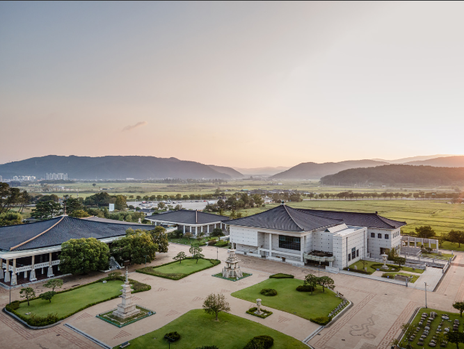

경주월드
전화번호 : 1544-8765
주소 : 경북 경주시 보문로 544
이용시간 : 종일권 : (평일) 10:00 ~ 18:00, (주말) 10:00 ~ 20:00
오후권 : (평일) 15:00 ~ 18:00, (주말) 16:00 ~ 20:00
(운영시간이 변경될 수 있으니 홈페이지 참조)
바로가기


바로가기
국립경주박물관
전화번호 : 054-740-7500
주소 : 경북 경주시 일정로 186 국립경주박물관
이용시간 : 평일 10:00 ~ 18:00, 주말 10:00 ~ 19:00
바로가기
안동하회마을
전화번호 : 054-852-3588
주소 : 경북 안동시 풍천면 전서로 186
이용시간 : 하절기(4 ~ 9월) : 09:00 ~ 18:00
동절기(10 ~ 3월) : 09:00 ~ 17:00
바로가기